The Climb's props, one by one: The Deep (floors 31 to 40)
2026-11-14. The user: "lets look at all props one by one and make the correct". Every kind was looked at on its own (the sheet at the end), every floor walked with the probe (pipeline/tools/climb-props-probe.js: every piece measured against the ground as drawn) and the shapes check (climb-shapes-probe.js: parts that do not meet), and each fault fixed at its cause, so every floor of the chapter gets it. Pictures: pipeline/tools/climb-props-shots.js, the same spot before (the branch's base, 281b428) and after; low views are a camera set down beside the prop, the others the game's own camera.
Nothing else moved: every scene of the thirty floors is where it was (scene lists compared floor by floor, 0 differences), the fights are the same (the perf tool's fight prints 45b46573, 988f012d, da05c457 on floors 21, 31 and 41 before and after), and no fix makes a new object on the game's random stream.
The probe, before and after (walkable ground and the edge, all ten floors)
| What | Before | After |
|---|---|---|
| Things in the air (no point within 5 cm of the ground) | 793 | 39 |
| Pieces standing on the ground with light under one side | 1374 | 89 |
| Pieces of the depth or the scenes through cover | 5 | 5 |
What is left is listed under "Seen but left" with the reason.
The faults (9)
Mushrooms by the pools
Wrong: The pale caps were turned apart from their stems: caps in the air beside short stems.
Cause: Stems and caps each took their own random turn.
Fix: One turn for both (the second draw is still made, so nothing after it moves).
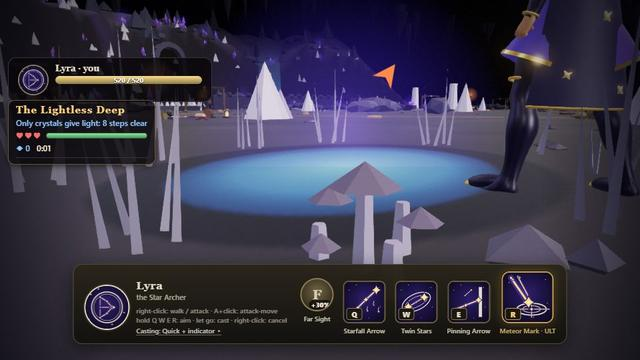
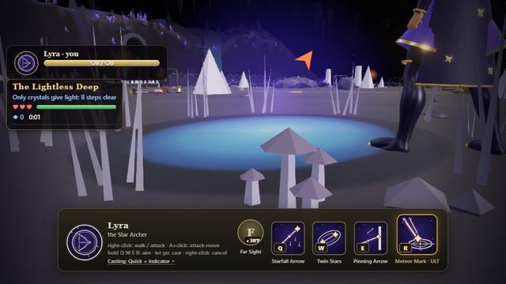
Glowing fungi at the pools and the wall's foot
Wrong: Glowing caps floating with no stems under them.
Cause: The same: two turns.
Fix: The same.
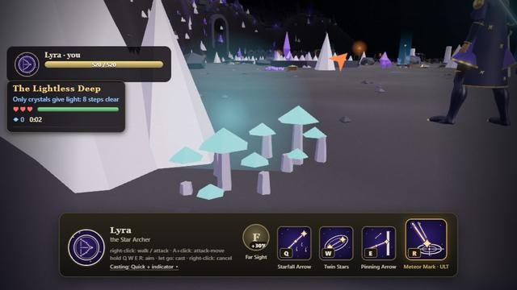
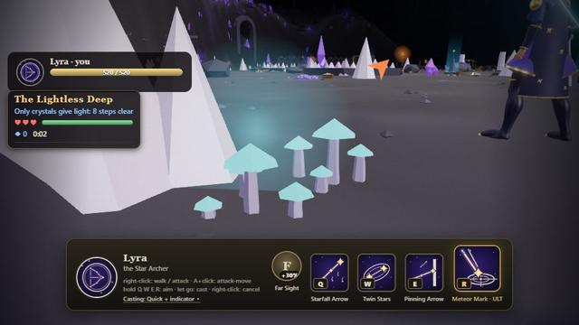
Cart on its side (cart scenes)
Wrong: Its four wheels stood 10 cm off the cart's floor.
Cause: The base-standing cylinder placed as if centred.
Fix: Wheels on the floor (scenes/deep.ts `cartSide`).
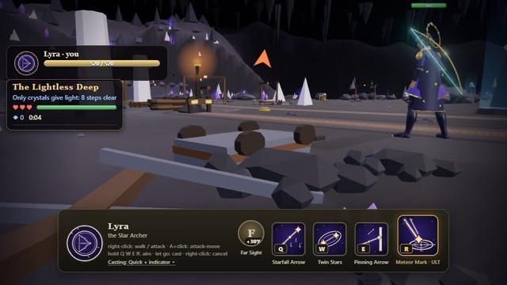
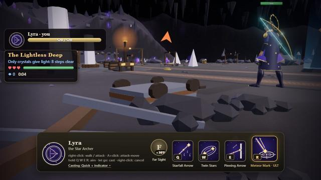
Collapse timber, winch crank, barrow, sack
Wrong: The timber's end cap lay 1.45 m under the floor; the winch crank 2 cm off its cheek; the barrow's wheel 4 cm off; a sack's tie 2 cm off.
Cause: Cap turned about the centre; the others a little off.
Fix: Each part on its piece (`timber`, `winch`, `barrow`, `sack`, and the depth's `winch`).
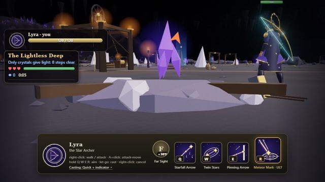
Rail pile (the depth, by the tracks)
Wrong: The outer rails hung past their two blocks; the upper rails sat in the gaps between the lower ones, touching nothing.
Cause: Blocks narrower than the pile; upper rails spaced wider than the lower.
Fix: Blocks as wide as the pile, each upper rail on two lower ones.
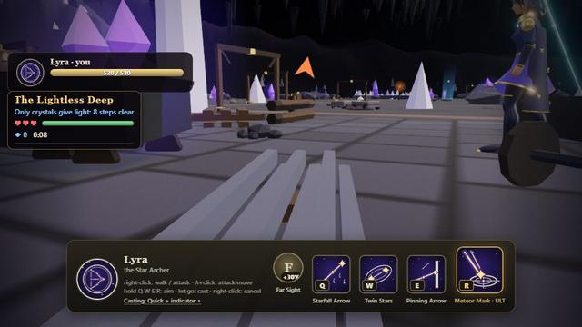
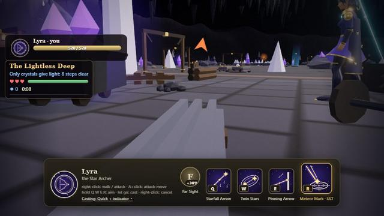
Mine cart (cover)
Wrong: Its wheels lay on their sides along the cart, half in the ground, and kept to the map's axes while the cart was turned.
Cause: Wheel turned about the wrong axis; their places not turned with the cart.
Fix: Wheels on their axles across the cart, on its long sides, on the ground, turned with it.
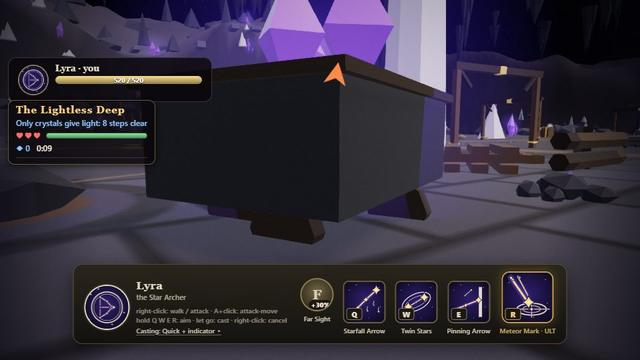
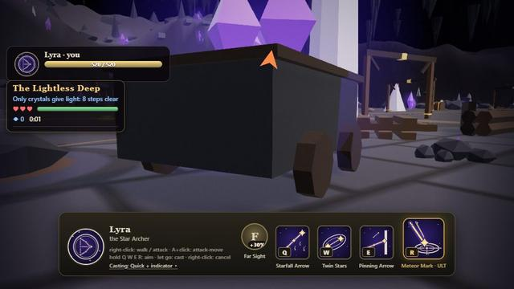
Timber stack (cover)
Wrong: The logs ran from the cover's middle out to one side (half outside its round), the two of a layer inside each other, the layers apart.
Cause: The base-standing cylinder laid along x from the middle; layers misspaced.
Fix: Logs over the round, two by two, on the ground and on each other.
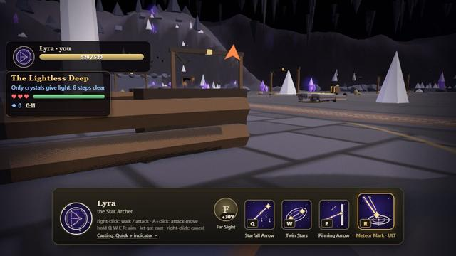
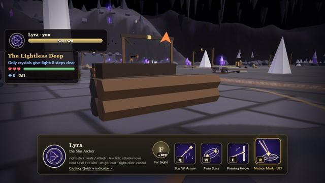
Stalagmites at the wall's foot
Wrong: On the slope their downhill side stood off the ground (1,374 such gaps at the edge on the ten floors).
Cause: Set at their middle's height.
Fix: Each on the lowest ground under its base. The Deep's gap hits at the edge went from 1,374 to 89; what is left are the mine entrances' posts against the wall, jetty planks on the shore and fungi on the slope.
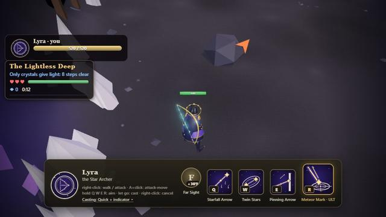
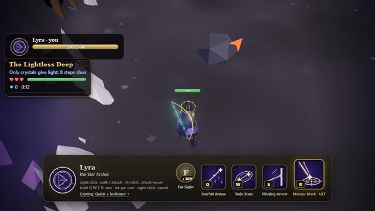
Crystal chips and shards on the floor
Wrong: They stood on their tips 2 to 6 cm above the floor.
Cause: Lifted 2 cm in the shape, 3 to 5 cm more where placed.
Fix: Their tips just in the floor.
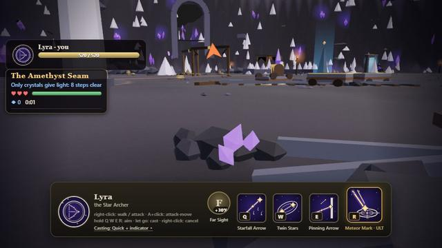
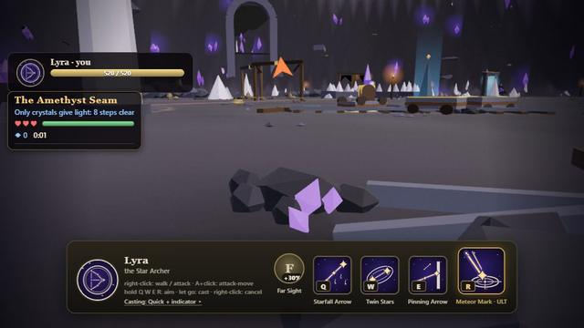
Seen but left
- Stalactites hang 23 to 46 m up with no roof: above the camera, never in a player's view.
- The gold keystone of the north wall's arch (floor 31) stands 4 cm above its stones, 20 m up: not in view.
- The sunken boat and the jetty stand over the lake bed: they are in the water (the probe does not count the water).
- Mine entrances at the edge (floor 32: posts and a cap beam over a dark doorway) stand on the slope with the doorway under the beam: looked at, they are built into the rock wall; kept.
- Small rocks and short stalagmites wholly under the ground (about 90 a floor): nobody sees them.
Every kind, and where it is built
- Scenes (scenes/deep.ts, `KINDS`, shapes in `makeKits`)
- camp, cart, collapse, harvest, survey, winch (against a rock), shrine, wreck (on the lake), junction, cage, flooded; echoes ore, lamp, pick, sack, helmet, sleeper, coil
- The depth (deepDepth.ts `buildDeepDepth`, shapes `S`)
- timber frames over the tracks, lamp posts, rope coils, crystal chips, buffer stops, points levers, rail piles, wheel sets, sleeper cribs, winches, the rest's stove, bunks, table and stools, poles, the boat and jetty, reeds, pale and glowing mushrooms, pebbles and scree, boulders, ledges, stalactites, bats
- The zone's cover and dressing (deepZone.ts)
- crates, timber stacks, huts, the fire, the crystal cradle, the mine cart, stalagmites, stalagmite walls, columns, rocks, crystals, great crystals, posts, walls; past the edge stalagmites and dark spires (instanced), crystal spires in the lake
The sheet: every scene kind on its own (the game's camera with the hero beside it, then low)
One of each kind and layout, in place on a floor of the chapter (the Sands and the Deep two of each, on two floors). Looked at one by one; what was wrong is in the faults above.
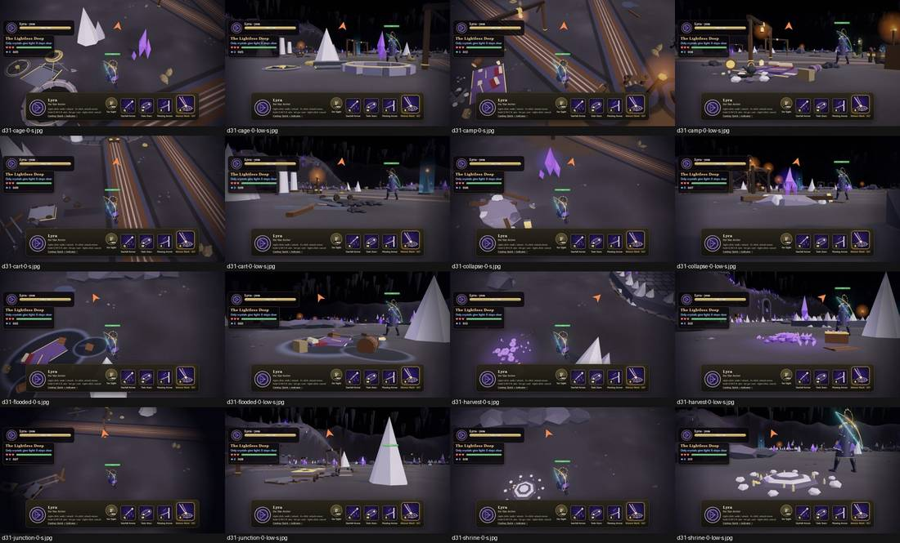
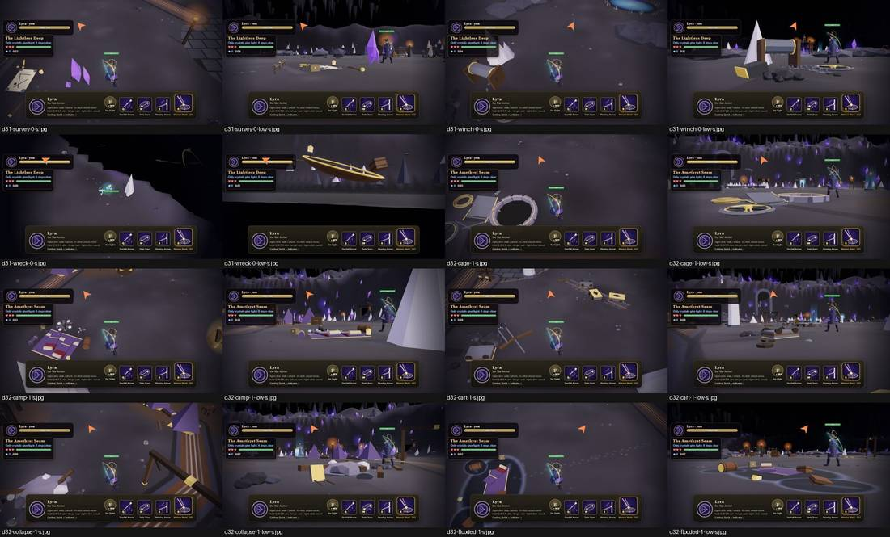
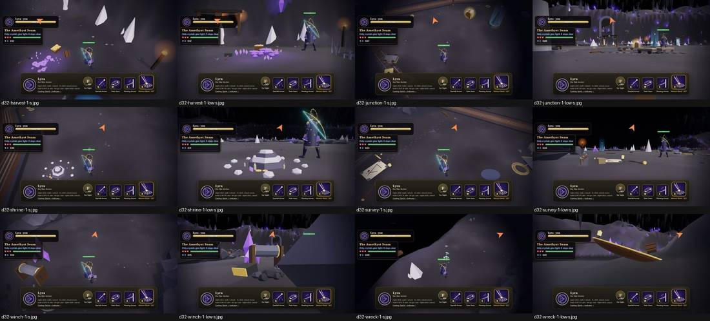